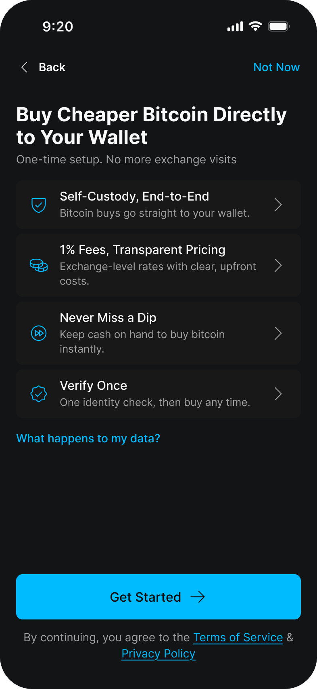

Every question raised with Hercle, in their own numbering and grouped by their original topics — what Blockstream asked, what Hercle answered, and Blockstream’s follow-up. Status is marked per row.
Who does what, before any screens
Establishes the account-of-record model and which parts of the flow exist on Hercle’s side today.
| Ref | Blockstream asked | Hercle answered | Blockstream follow-up |
|---|---|---|---|
| 0.1 Confirmed | Does the account-of-record model match how you see the partnership — your customer, our interface? | Aligned — your customer, our interface. One point to reflect in the T&Cs: we also allow users to log in to the Hercle platform directly if they need to. | Confirmed — the in-app T&C step will disclose that users may also log in to Hercle directly (settled 24 Aug, see 1.3). |
| 0.2 Confirmed | We'd be your first consumer-wallet integration — which parts of this walkthrough don't exist on your side yet? | Automated withdrawals aren't supported today — you'd own the trigger (trade/conversion → withdrawal). External-address whitelisting is a prerequisite before any payout. | Accepted — we'll own the payout trigger and are designing a pending-state UX for the ~30-minute settlement window (see 4.5). |
Opening a Hercle cash account from inside the wallet
What account creation actually requires, who owns the user relationship, and what Blockstream must disclose or retain.
| Ref | Blockstream asked | Hercle answered | Blockstream follow-up |
|---|---|---|---|
| 1.1 Confirmed | Can accounts be created with email + country only, with name, date of birth, and address collected later via KYC? | Yes — we can create accounts with email + country only, with name / DOB / address collected via KYC. | — |
| 1.2 Open — new question | Can account creation happen silently via API, with no Hercle credentials and no Hercle-sent emails to the user? | Silent API creation with no Hercle credentials is supported, as long as the user doesn't log in to the Hercle platform separately. On emails: we don't currently have a way to suppress Hercle sign-up notifications, so we'd need to build an integration layer that routes notifications through your app (like a white-label solution). | Accepted for the first release: Hercle-sent sign-up notifications are fine and the T&C acceptance step is not a blocker; a white-label notification layer is not a launch requirement. New question (25 Aug): is silent account creation synchronous or asynchronous? What's the expected latency, is completion signalled by webhook or polled, and which failure reasons can come back — and which of those can we show the user? We're designing the pending and failure screens around this. Also on the sign-up emails: could they be customised to reference the Blockstream app (e.g. “thanks for setting up your Hercle account via Blockstream”), so they line up with our flow? A nice-to-have. To get timing and copy right, could you share the step-by-step of which emails go out and when during account creation? |
| 1.3 Open — new question | Which agreements must the user accept, and can Blockstream present them in-app on Hercle's behalf? | The KYC / KYB agreements are covered via Sumsub. On presenting the T&Cs in-app on our behalf: confirm that it can be done as long as the step is mandatory and you clearly indicate that the end user can log in separately. | Confirmed — the T&C step will be mandatory, in-app, with the direct-login disclosure. New question (25 Aug): the T&Cs are shown before an email address exists on our side — does acceptance need to be recorded against the Hercle account, or can we present the T&Cs first and pass the acceptance (timestamp + version) at silent account creation? |
| 1.4 Open — new question | Which jurisdictions are supported or prohibited, and which are live at launch? | Our prohibited jurisdictions (no onboarding) are the countries we classify as very-high-risk under our Group Customer Acceptance Policy: Afghanistan, Belarus, Central African Republic, China, Democratic Republic of the Congo, Cuba, Ethiopia, Haiti, Iran, Iraq, Lebanon, Libya, Mali, Myanmar, Namibia, Nepal, Nicaragua, North Korea (DPRK), Palestine (West Bank and Gaza Strip), Russian Federation, Somalia, South Sudan, Sudan, Syria, Venezuela, Vietnam, Yemen, and the Ukrainian regions of Crimea, Donetsk, Luhansk, Zaporizhzhia and Kherson. High-risk countries can be onboarded with enhanced due diligence. | New question (25 Aug): is the prohibited-jurisdiction list available in machine-readable form or via API, and kept current — so our inline country check at sign-up never drifts from your policy? |
| 1.5 Confirmed | Can an account sit unverified or unfunded indefinitely — any dormancy or expiry rules? | No dormancy or expiry rules — an account can sit unverified / unfunded indefinitely. | — |
| 1.6 Confirmed | How does account deletion work on Hercle's side, and what must be retained as a VASP? | We have an obligation to retain all the data for 10 years, therefore we can't allow deletion of the Sumsub applicant or the data will be lost. | Our “delete account” flow will disclose the 10-year retention rather than promise full deletion. |
| 1.7 New | We've drafted the screen a user sees before creating the cash account (shown below) and would value your feedback on it. | — (new question, no prior code) | (a) On the pricing line — “1% fees, transparent pricing” — how would you recommend we express rates and spread so it's factually accurate from your side? (b) We link your Terms of Service and Privacy Policy directly beneath the primary button (“By continuing, you agree to…”) — we assume presenting them this way works for you; please confirm. (c) Any feedback on the other claims is welcome.  |
Who runs the check, and who holds the result
Both companies use Sumsub — the open questions are the applicant model, tier structure, and how the result is shared and reused.
| Ref | Blockstream asked | Hercle answered | Blockstream follow-up |
|---|---|---|---|
| 2.1 / 2.2 Open — proposal to Hercle | Confirm the model: Blockstream's Sumsub account runs the check, then the applicant is linked to Hercle via token sharing. Does anything need to travel outside Sumsub? | We propose that KYC lives on Hercle: with the current onboarding API flow plus our checks, you retrieve what you need after we complete onboarding as we are obliged to store all the data and be able to introduce changes accordingly. We'll enable Sumsub webhooks on our side, which also eases forwarding events to you, and we'd expose a token-sharing endpoint for the applicant link. Happy to spec this together. | We're aligned — KYC origination on your Sumsub works for us and matches your onboarding and monitoring responsibilities. What we want to get right is reuse: (1) confirm the token-sharing endpoint lets the applicant, with user consent, be shared with any entity registered on Sumsub — and ideally two-way, so an applicant verified elsewhere in the ecosystem can also be passed to you; (2) we expect future Blockstream services to need KYC — for example higher swap tiers or lending — so we'd like to understand how a user verified through your flow gets reused for those, and what the lightest path looks like for a user who needs verification but isn't opening a cash account; (3) your answer mentions we retrieve what we need after onboarding — let's spec exactly what's retrievable via API in the joint session you offered. Let's also reflect the reuse rights in the corresponding section of the master agreement. |
| 2.3 Open — Hercle to revert | Is there a single verification tier (liveness, document, proof of income), and which limits attach to it? | Not a single tier today, we are also requiring a questionnaire, but we're reviewing and updating the current model. We'll confirm the tier structure later. Open — we'll revert. | Could you consider a lighter tier — less data, lower limits — for lower-risk users? Happy to discuss what that would need to look like on your side. |
| 2.4 Confirmed in principle | Can Hercle send a status webhook confirming when an account is activated? | Yes — we'll send you a webhook when the account is activated (approved / rejected / re-check). We'll define the exact events and payload as part of the API spec. | Events and payload to be defined in the joint API-spec session. |
| 2.5 / 2.6 Confirmed | What's the re-verification cadence, and how are rejections or edge cases (PEP hits, name mismatches) handled? | Re-verification is risk-based: high risk ~6 months, medium ~1 year, low ~2–3 years; if there's no response within 2 weeks of the due date we disable the account. On rejections / mismatches (e.g. PEP hit, name mismatch), the user reaches out and we review the case to accept or reject. | — |
| 2.7 New | Is the Sumsub KYC link re-issuable, and does the applicant's progress persist if they close the webview or the app mid-verification? What is the link's expiry? | — (new question, no prior code) | We plan to open the KYC flow in an in-app webview. The flow assumes a user can leave mid-verification and resume — from the same link or a re-issued one — without losing progress. Could you confirm link expiry and re-issue behaviour? |
Bank transfer in, balance visible in-app
Mechanics of the euro deposit — mostly settled; a handful of exact figures are still pending from Hercle.
| Ref | Blockstream asked | Hercle answered | Blockstream follow-up |
|---|---|---|---|
| 3.1 Open — fee TBC | What are the SEPA deposit fees, and are SEPA Instant or cards on the roadmap? | SEPA Instant is supported, up to €100k. Cards aren't on the roadmap. We'll confirm the SEPA deposit fee. | Awaiting the deposit fee figure from Hercle. |
| 3.2 Confirmed | Is it a dedicated virtual IBAN per user, or a shared account with a reference code? | Dedicated virtual IBAN per user, under a Hercle master account — the balance technically sits on the master account, but all operations execute from and to the user's own account. | — |
| 3.3 Open — details TBC | What does the user's bank see as beneficiary, and what has to match exactly on the wire? | The bank sees the user as beneficiary. We'll confirm exactly what must match on the wire. | Awaiting the exact wire-match fields from Hercle. |
| 3.4 Confirmed | Is there a webhook when funds credit, and what's the typical timing for SEPA versus SEPA Instant? | Yes — webhook on deposit, near-instant. SEPA Instant is near-instant (max €100k); standard SEPA is 0–1 business days. | — |
| 3.5 Open — being defined | Must the sender name match the KYC name, and what happens to mismatched or third-party deposits? | The sender name must match the KYC name. The return path for mismatched / third-party deposits is still being defined as it depends on the provider, in your case most likely it won't even hit the account. | Awaiting the defined return path from Hercle. |
| 3.6 Confirmed | Are there minimum or maximum deposit amounts, or extra checks on a first deposit? | Minimum €10, no maximum limit. | — |
| 3.7 Confirmed | Is USD via ACH on the roadmap alongside EUR/SEPA? | We already support ACH and same-day ACH for USD; timing is standard to ACH. | — |
Execution, then an automatic withdrawal to the user’s own wallet
The highest-stakes section: address whitelisting and proof of ownership decide whether linking a wallet is one tap or a multi-step ceremony.
| Ref | Blockstream asked | Hercle answered | Blockstream follow-up |
|---|---|---|---|
| 4.1 Confirmed | Can Blockstream use an RFQ with a locked quote, 15-second default validity, and no partial fills? | Confirmed — RFQ with locked quote, 15s default validity, no partial fills on RFQ. | — |
| 4.2 Open | What exactly is required to register a withdrawal address — a signed message, in what format — and is a second verification method also run? | Your signed-message proposal needs evaluation on our side before we commit, we currently use email confirmation plus a penny test due to regulatory obligation and might not be able to rely on you on this side. Could you please share more about the method you're intending to use so we can evaluate. Open — we'll revert. | For singlesig destinations, our existing libraries can sign an arbitrary per-user challenge with the key of the destination address, which you could verify as cryptographic proof of control — see p. 31, option 83(d) (“digitally sign a specific message”) of the EBA Travel Rule Guidelines; this is our preferred way. |
| 4.3 Confirmed | Can addresses be pre-registered in batches? What are the caps, rate limits, and expiry, and is registration a hard gate on buying? | Batch registration isn't supported, addresses are whitelisted individually. No expiry on unused registrations. Rate limit is 500 req/s. You can proceed with buying without a pre-whitelisted external address, but it is a pre-requirement to withdraw. | — |
| 4.5 Confirmed | What's the network-fee structure, is it paid in BTC, how soon does the withdrawal broadcast after execution, and is it batched? | The settlement fee is paid in BTC. We don't batch — transactions are subaccount-based, so each withdrawal is broadcast as its own transaction, on average around 30 minutes after execution. | We're designing a pending-state UX for the ~30-minute broadcast window. |
| 4.6 Confirmed | Does the €1,000 threshold apply per transaction or in aggregate, and are all self-hosted withdrawals verified regardless of amount? | The €1,000 threshold is applied per transaction. We verify all self-hosted withdrawals regardless of amount. | — |
| 4.7 Confirmed | Can a registration be rejected on analytics grounds? Once verified, is an address whitelisted permanently, or does re-verification invalidate it? | Once verified, an address is whitelisted permanently. For self-hosted wallets we require proof of ownership, confirmed via a penny test; this step is not a subject for any other analytics. KYC re-verification doesn't invalidate a whitelisted address, as long as the user's data doesn't change. | — |
| 4.8 New | Our design keeps buy→settle one-tap: the user authenticates in the Blockstream app — we gate the sensitive actions (address registration, withdrawals) with our own verification step — and our backend calls your API to execute and settle to the already-whitelisted, ownership-proven address. Can you confirm your trade and settlement endpoints work this way: authentication at the API-credential level, no per-transaction user-facing step (OTP or email) on your side, with the destination constrained to the whitelisted address? | — (not yet sent to Hercle) | New question, no prior code — the answer decides where we place our own security step in the buy-and-settle flow. |
Cash balance out, without necessarily buying first
A user who deposits and never buys still needs a way to get their money back. Destination rules are the main design constraint.
| Ref | Blockstream asked | Hercle answered | Blockstream follow-up |
|---|---|---|---|
| 5.1 Confirmed | Which payout rails are supported — SEPA only, SEPA Instant, card? | SEPA Instant up to €100k, standard SEPA above that. Card payouts aren't supported. | — |
| 5.2 Push pending | Must the destination account's holder name match the KYC name, is the account verified, and is it limited to accounts already used for funding? | The holder name must match the KYC name. We verify by email today and can introduce an API confirmation step. Withdrawals are only possible to accounts whitelisted beforehand — an account used for funding but not whitelisted can't receive a payout. | We'd like the API-confirmation option — and could the funding account be auto-whitelisted for payout, so users don't repeat a manual step? And to confirm the model: the email / API confirmation applies once, when the bank account is whitelisted — not per withdrawal? Payouts to an already-whitelisted account would then be triggered via API with no per-withdrawal user step on your side, since we verify the user in-app before submitting. |
| 5.3 Confirmed | What are the fees, limits, and timing per rail, and is there a webhook on completion? | Fees / limits / timing table attached; we have webhooks on completion of the fiat payout. | — |
| 5.4 Confirmed | Do large withdrawals trigger extra checks, such as source-of-funds review? | Above €100k, an additional check applies (source of funds). | — |
31 questions from Hercle’s original response plus 3 new items (1.7, 2.7 and 4.8), tracked as 32 entries (two pairs — 2.1/2.2 and 2.5/2.6 — were answered together): 19 decided, 13 outstanding, of which three (1.7, 2.7, 4.8) are new — going to Hercle for the first time on 25 Aug.
Low-fidelity on purpose. the Blockstream app is a self-custody wallet; Hercle is the regulated VASP behind the cash account. Everything solid is what we intend to build; everything dashed amber is a question we need answered before we can commit the flow. Click a step to walk its screens. Everything here is first-release scope — create, verify, fund, buy to self-custody, withdraw. Sell is parked outside this artefact for now.
The Blockstream app stays a self-custody wallet and owns 100% of the interface. Hercle is the account of record behind it: EUR cash balance, execution & settlement, fiat rails, and VASP compliance. The user never leaves our app — and crypto never accumulates at Hercle: every buy executes and auto-withdraws to the user's own wallet.
What we assume
- API-first integration: the user contracts with Hercle (T&C) but all UI, comms and support entry points live in our app.
- Hercle holds only fiat for the user, plus crypto transiently during settlement.
- REST + webhooks; the sandbox is available and we have access.
For Hercle
- 0.1 HERCLE CONFIRMED — aligned: your customer, our interface. One thing to reflect in the T&Cs: users can also log in to the Hercle platform directly if they want to.
- 0.2 HERCLE CONFIRMED — automated withdrawals aren't supported on their side today; we own the trigger (trade/conversion → withdrawal). External-address whitelisting is a prerequisite before any payout. Internally: we accept this, and are designing a pending state for the ~30 min broadcast window (Rich, 21 Aug).
The user opts in from a promo card, sees what the cash account is (and who provides it), and we create the account via API. The core unknown: what data you need, and when — we'd like account creation to be near-zero friction, deferring everything possible to the KYC step.
What we assume
- Creation needs little more than email + country of residence; identity data arrives with KYC.
- We present Hercle's terms in-app; acceptance is recorded and passed to you.
- The user never sees a Hercle login — the account is reachable only through our app.
For Hercle
- 1.1 HERCLE CONFIRMED — yes, accounts can be created with email + country only; name / DOB / address collected via KYC. Matches our model exactly.
- 1.2 HERCLE PARTLY CONFIRMED — silent API creation with no Hercle credentials works, as long as the user doesn't separately log in to Hercle directly. But they can't suppress their own sign-up emails today — would need a white-label notification layer routed through our app. Decided internally (24 Aug): accepted for the first release — Hercle emails and the T&C step are fine; the white-label layer is not a launch requirement. New Q (25 Aug): is silent creation sync or async — expected latency, webhook vs poll, and the failure taxonomy (which reasons come back, which can we show the user)?
- 1.3 HERCLE CONFIRMED — KYC/KYB agreements are covered via Sumsub. We can present the T&Cs in-app on their behalf as long as the step is mandatory and clearly discloses the user can also log in to Hercle separately. New Q (25 Aug): T&Cs are shown before an email exists on our side — must acceptance be recorded against the Hercle account, or can we pass acceptance (timestamp + version) at silent creation?
- 1.4 HERCLE CONFIRMED — explicit prohibited list (very-high-risk under their Group Customer Acceptance Policy): Afghanistan, Belarus, CAR, China, DRC, Cuba, Ethiopia, Haiti, Iran, Iraq, Lebanon, Libya, Mali, Myanmar, Namibia, Nepal, Nicaragua, North Korea, Palestine (West Bank/Gaza), Russia, Somalia, South Sudan, Sudan, Syria, Venezuela, Vietnam, Yemen, plus Crimea/Donetsk/Luhansk/Zaporizhzhia/Kherson. High-risk countries onboard with enhanced due diligence. No geolocation needed — matches our proposal. New Q (25 Aug): is this list available machine-readable / via API and kept current, so our inline country check at sign-up never drifts?
- 1.5 HERCLE CONFIRMED — no dormancy or expiry rules, an account can sit unverified/unfunded indefinitely.
- 1.6 HERCLE CONFIRMED (changes our assumption) — they must retain all data for 10 years; the Sumsub applicant cannot be deleted, or the data is lost. Our "delete profile + Sumsub applicant" copy needs to change to disclose retention instead.
We already integrate Sumsub for verification. The user verifies once, in our app; we pass the result to you so the cash account activates for funding and withdrawal. This step is well defined as long as we generate the links and operate our own Sumsub account: once the user completes the flow, we trigger applicant sharing via Sumsub token sharing so Hercle can access the applicant and run their compliance checks.
What we assume
- One KYC, done in-app on our Sumsub account; on completion we trigger applicant sharing to Hercle via Sumsub token sharing.
- KYC level maps to limits (fund / buy / withdraw) that we surface in the UI.
- Status changes reach us by webhook so the app reflects them live.
For Hercle
- 2.1 / 2.2 HERCLE PROPOSED A DIFFERENT MODEL — KYC lives on their Sumsub via their onboarding API; they retrieve what they need and forward Sumsub webhooks, plus expose a token-sharing endpoint for the applicant link. "Happy to spec this together." Team aligned (21 Aug): we don't need to own the Sumsub account — the real requirement is verify-once + re-shareable KYC for future partners/integrations. Confirming that framing back to them, and taking up the joint spec-session offer.
- 2.3 HERCLE: not a single tier — a questionnaire is also required, tier structure under review. Open — they'll revert. Our follow-up: pushing for a lighter/lower tier (less data, lower limits) for lighter users (Dom, 21 Aug).
- 2.4 HERCLE CONFIRMED — yes, a webhook fires on activation (approved / rejected / re-check). Exact events/payload to be defined together as part of the API spec.
- 2.5 / 2.6 HERCLE CONFIRMED — risk-based re-verification: ~6 months (high risk), ~1 year (medium), 2–3 years (low). No response within 2 weeks of the due date disables the account. On rejections/mismatches (PEP hit, name mismatch), the user reaches out to Hercle and they review to accept or reject.
- 2.7 NEW (25 Aug) — is the Sumsub KYC link re-issuable, and does the applicant's progress persist if they close the webview/app mid-verification? Link expiry? Our flow shows the KYC link in an in-app webview and assumes leave-and-resume without losing progress.
The user wires euros to their cash account and sees the balance appear inside our app — ideally with a push notification the moment funds credit. That requires a webhook from you on credit. Rails are settled: SEPA only at launch — the open items are the credit webhook and the operational details of the wire.
What we assume
- SEPA only at launch (confirmed with Hercle); we render the transfer details and a copy-paste reference.
- You notify us on credit; we own the "money arrived" moment (balance + push).
- Sender account must be in the user's own name.
For Hercle
- 3.1 HERCLE PARTLY CONFIRMED — SEPA Instant supported up to €100k; cards are not on the roadmap. SEPA deposit fee still to be confirmed.
- 3.2 HERCLE CONFIRMED — dedicated virtual IBAN per user, under a Hercle master account. Balance technically sits on the master account, but all operations execute from/to the user's own account.
- 3.3 HERCLE PARTLY CONFIRMED — the bank sees the user as beneficiary. Exact wire-match fields still to be confirmed.
- 3.4 HERCLE CONFIRMED — webhook on deposit, near-instant. SEPA Instant is near-instant (max €100k); standard SEPA is 0–1 business days. "2–3 days" copy is dead — replace with "usually within minutes."
- 3.5 HERCLE PARTLY CONFIRMED — sender name must match the KYC name. Return path for mismatched/third-party deposits still being defined — depends on the provider; in our case it likely won't even hit the account.
- 3.6 HERCLE CONFIRMED — minimum €10, no maximum.
- 3.7 HERCLE CONFIRMED — already supports ACH and same-day ACH for USD, standard ACH timing.
Buys initiate in our app against your execution/liquidity, and settle by auto-withdrawing to the user's own wallet — a fresh address per buy. That makes address registration (travel rule) the crux. Our model: the user consents once per wallet ("link"); on every buy the app derives the next address, signs an ownership proof itself, and registers it with you via API — silent for software wallets. Hardware (Jade) needs on-device approval per signature, so that path differs.
What we assume
- Registration is per receive address (never xpub — we won't share whole-wallet history).
- Because the app is the wallet, cryptographic ownership proof is signed in-app — no Satoshi test, nothing for the user to paste.
- We link at first buy regardless of amount, so the €1k threshold never surprises anyone mid-flow.
- Fresh address per buy — we refuse address reuse on privacy grounds.
For Hercle
- 4.1 HERCLE CONFIRMED — RFQ with locked quote, 15s default validity, no partial fills on RFQ. Exactly our proposal.
- 4.2 HERCLE — our signed-message proposal "needs evaluation before we commit"; they currently use email confirmation + a penny test for regulatory reasons and might not be able to rely on ours. They've asked us to share more detail on the method so they can evaluate it. Open — they'll revert. Our follow-up (proposal ready, 24 Aug): challenge signing for singlesig destinations — our libraries sign a per-user challenge with the destination address key, expressly recognised by EBA guidelines as an alternative to a penny test; penny-test fallback for Green multisig and other unsupported configurations in V1; backend-assisted multisig verification explored after V1.
- 4.3 HERCLE CONFIRMED — no batch registration, addresses whitelisted individually. No expiry on unused registrations. Rate limit 500 req/s. You can buy without a pre-whitelisted external address — whitelisting is only a prerequisite for withdrawal, not for buying.
- 4.4 (ours to solve, not Hercle's) Hardware wallets: Jade requires on-device approval per signature. Our design call: batch-register at link time vs. an alternative attestation path. Kept here for completeness.
- 4.5 HERCLE CONFIRMED — settlement fee paid in BTC. No batching — transactions are subaccount-based, each withdrawal broadcasts as its own transaction, on average ~30 minutes after execution. New follow-up (21 Aug): does the payout trigger itself require an OTP on their API? Unanswered — directly affects our OTP-placement design if yes.
- 4.6 HERCLE CONFIRMED — the €1,000 threshold applies per transaction. They verify all self-hosted withdrawals regardless of amount.
- 4.7 HERCLE CONFIRMED — once verified via penny test, an address is whitelisted permanently; not subject to further analytics. KYC re-verification doesn't invalidate a whitelisted address, as long as the user's data hasn't changed. Confirms EBA GL 86 behavior — fresh-address-per-buy is dead, "link wallet" is a one-time ceremony per wallet.
The user moves euros from the cash balance to their bank account. Simple on the surface — the questions are about destination rules (name match, verification, first-time destinations) and whether anything faster than plain SEPA exists. In scope for v1: a user who deposits and never buys must be able to get their money back.
What we assume
- SEPA payout to an IBAN in the user's own name; saved destinations after first use.
- Webhook on completion so the app can close the loop.
For Hercle
- 5.1 HERCLE CONFIRMED — SEPA Instant up to €100k, standard SEPA above that. No card payouts.
- 5.2 HERCLE CONFIRMED — holder name must match KYC. Verified by email today, with an API confirmation step possible. Withdrawals only to accounts whitelisted beforehand — a funding account is not auto-whitelisted for payout. Our follow-up: push for API confirmation + auto-whitelisting the funding account, to avoid a second manual step.
- 5.3 HERCLE CONFIRMED — fee/limit/timing table provided; webhook fires on completion of the fiat payout.
- 5.4 HERCLE CONFIRMED — above €100k, an additional source-of-funds check applies.
Euros inside your wallet — without giving up your keys.
One step left before you can add funds.
Takes about 2 minutes. You'll need a photo ID.
(Sumsub SDK)
powered by Sumsub
Your cash account is active.
Funding methods
Send euros from a bank account in your name.
To deliver bitcoin to your own wallet, we confirm receive addresses from this wallet as yours — automatically, with every buy. Only linked wallets are tied to your verified identity. Your other wallets stay private.
bc1q k8n2 ···· fresh address
0.00546 BTC · Main Wallet
€455.00 → BG80 ···· 41